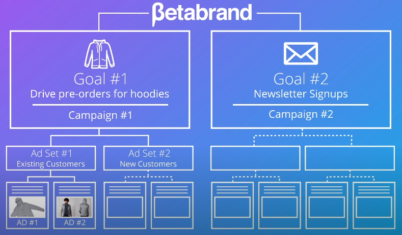
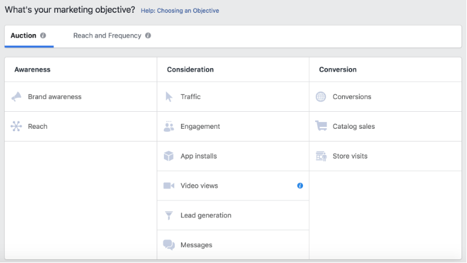
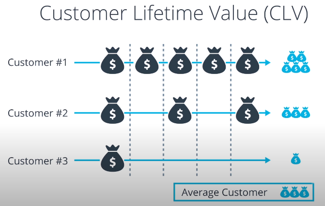
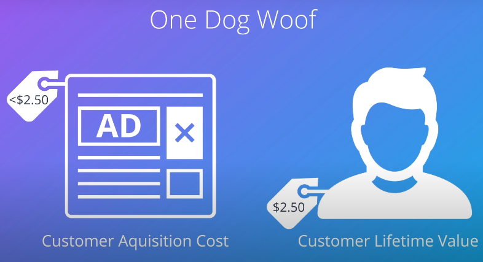

The Facebook Ads Manager
Ad Set-->Once you've chosen your objective, you will create your first ad set as part of that campaign and ad set is a group of ads that share the same audience targeting, placements and budget&scheduling that way you don't have to manually make these selections over and over for every single Ad that is meant to have the same behavior
-->after defining your Ad Set, you will be actually create your ad

------------------------------------------------------------------------------------------------
Campaign Objectives
Facebook Campaign Objectives
Every campaign you set up, on Facebook or anywhere else, should have a clear objective. Ask yourself: What do you want users to do as a result of seeing your ad? What metrics will you use to indicate whether your campaign is successful? Maybe it’s traffic to your website, shares of a specific post, downloads of an app, local store visits or sign-ups for a newsletter.
Facebook broadly distinguishes three different kinds of objectives that follow the traditional user journey from awareness to action or conversion. For each type of objective, they give you multiple campaign objectives you can choose from. Read through all the different objectives below. Please note that sometimes not all objectives are available to all users or the names are slightly different from the ones below.

-------------------------------------------------------------------------------------------------------------------------------
Meet the Client
-->In marketing, the customer lifetime value is a metrice that describes, the total net profit that a company makes from a customer during their entire relationship, Simply speaking, you have to estimate how much profit you will make with one new average customer, reader or user over time


-------------------------------------------------------------------------------------------------